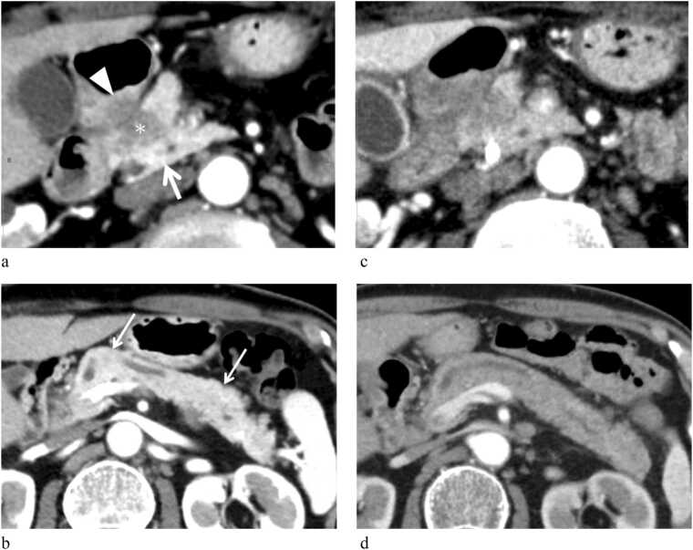

Ficha del catálogo
Adenocarcinoma de páncreas
- Sistema
- Digestivo
- Modalidad
- TC
- Región
- Páncreas y vasos peripancreáticos
- Dificultad
- Avanzado
Es la neoplasia sólida más frecuente del páncreas, de origen ductal y con abundante estroma fibroso, lo que explica su escaso realce. La mayoría se localiza en la cabeza y se manifiesta con ictericia indolora, pérdida de peso o dolor dorsal. El pronóstico depende en gran medida de que la enfermedad sea resecable en el momento del diagnóstico.
Técnica
El protocolo pancreático de tomografía con contraste intravenoso a flujo alto y adquisición en fase pancreática y en fase portal es el estándar para el diagnóstico y para la estadificación local. Se administra agua como contraste oral neutro y se emplean cortes finos con reconstrucciones multiplanares y curvas que sigan los ejes vasculares.
Qué observar
- Masa hipoatenuante respecto del parénquima, más evidente en la fase pancreática
- Interrupción abrupta del conducto pancreático principal con dilatación proximal a la lesión
- Dilatación conjunta del colédoco y del conducto pancreático, conocida como signo del doble conducto
- Atrofia del parénquima situado por detrás de la obstrucción ductal
- Grado y extensión del contacto con la arteria mesentérica superior, el tronco celiaco, la arteria hepática común y el eje venoso mesentericoportal
- Metástasis hepáticas, implantes peritoneales, ascitis y adenopatías fuera del campo quirúrgico
Hallazgos
El tumor se ve como una masa mal delimitada e hipodensa en la fase pancreática, con contornos infiltrantes que borran la interfase con la grasa peripancreática. Cuando se localiza en la cabeza suele producir dilatación biliar y pancreática y atrofia del cuerpo y de la cola. Una proporción de tumores es isoatenuante y solo se sospecha por signos indirectos como el corte ductal, el abombamiento del contorno glandular o la atrofia distal. La valoración vascular describe el grado de contacto en grados de circunferencia, la deformidad del vaso y la existencia de trombo tumoral.
Perlas
Los signos indirectos salvan el diagnóstico cuando el tumor no se ve. Un conducto pancreático que se interrumpe de forma brusca con atrofia distal debe considerarse sospechoso aunque no se identifique masa alguna. En la estadificación lo que decide es la relación con los vasos, por lo que el informe debe indicar de forma explícita el porcentaje de circunferencia en contacto y si el vaso está deformado, y no limitarse a decir que existe proximidad.
Diagnóstico diferencial
- Pancreatitis crónica focal
- Calcificaciones, conducto que atraviesa la lesión de forma continua y antecedente de episodios repetidos.
- Pancreatitis autoinmune
- Aumento difuso en salchicha con halo periférico y conducto estrechado de forma larga, con respuesta al esteroide.
- Tumor neuroendocrino pancreático
- Lesión hipervascular de bordes definidos, con realce arterial intenso y sin obstrucción ductal marcada.
- Metástasis pancreática
- Lesión bien delimitada, a menudo hipervascular, con tumor primario conocido, en especial renal.
- Linfoma pancreático
- Masa voluminosa homogénea con adenopatías y con escasa dilatación ductal pese al tamaño.
Simuladores
- Lipomatosis focal o parénquima heterogéneo que aparenta una masa hipodensa
- Surco duodenopancreático inflamado que simula tumor de la cabeza
- Vena porta o esplénica de trayecto anómalo confundida con infiltración
Por modalidad
- TC
- Es el método de referencia para el diagnóstico y para la estadificación local y vascular con protocolo dedicado
- RM
- Detecta mejor los tumores pequeños e isoatenuantes y caracteriza las lesiones hepáticas dudosas
- US
- El ultrasonido endoscópico es el más sensible para lesiones pequeñas y permite la toma de muestra dirigida
Protocolo
Protocolo pancreático con agua como contraste oral, contraste intravenoso a flujo alto, fase pancreática a los 40 a 50 segundos y fase portal a los 65 a 80 segundos, cortes de 1 mm y reconstrucciones coronales, sagitales, de máxima intensidad y curvas a lo largo de los vasos. Se cubre además el tórax para la estadificación completa.
Clasificación
La valoración de la resecabilidad se apoya en el grado de contacto tumoral con los vasos. Se considera resecable la enfermedad sin contacto arterial y sin contacto venoso o con un contacto venoso mínimo y sin deformidad del vaso. Se considera limítrofe la que presenta contacto arterial o venoso que no supera la mitad de la circunferencia, o contacto venoso mayor pero con posibilidad de reconstrucción. Se considera localmente avanzada la que envuelve más de la mitad de la circunferencia arterial o la que ocluye el eje venoso sin opción de reconstrucción. La presencia de metástasis define la enfermedad metastásica con independencia de la anatomía local.
Errores frecuentes
- Descartar el tumor porque no se ve la masa, sin valorar el corte ductal ni la atrofia distal
- Usar contraste oral positivo, que dificulta la valoración de la interfase con el duodeno
- Describir el contacto vascular de forma vaga sin precisar la extensión circunferencial

adenocarcinoma pancreatico signo del doble conducto resecabilidad protocolo pancreatico arteria mesenterica superior tomografia estadificacion